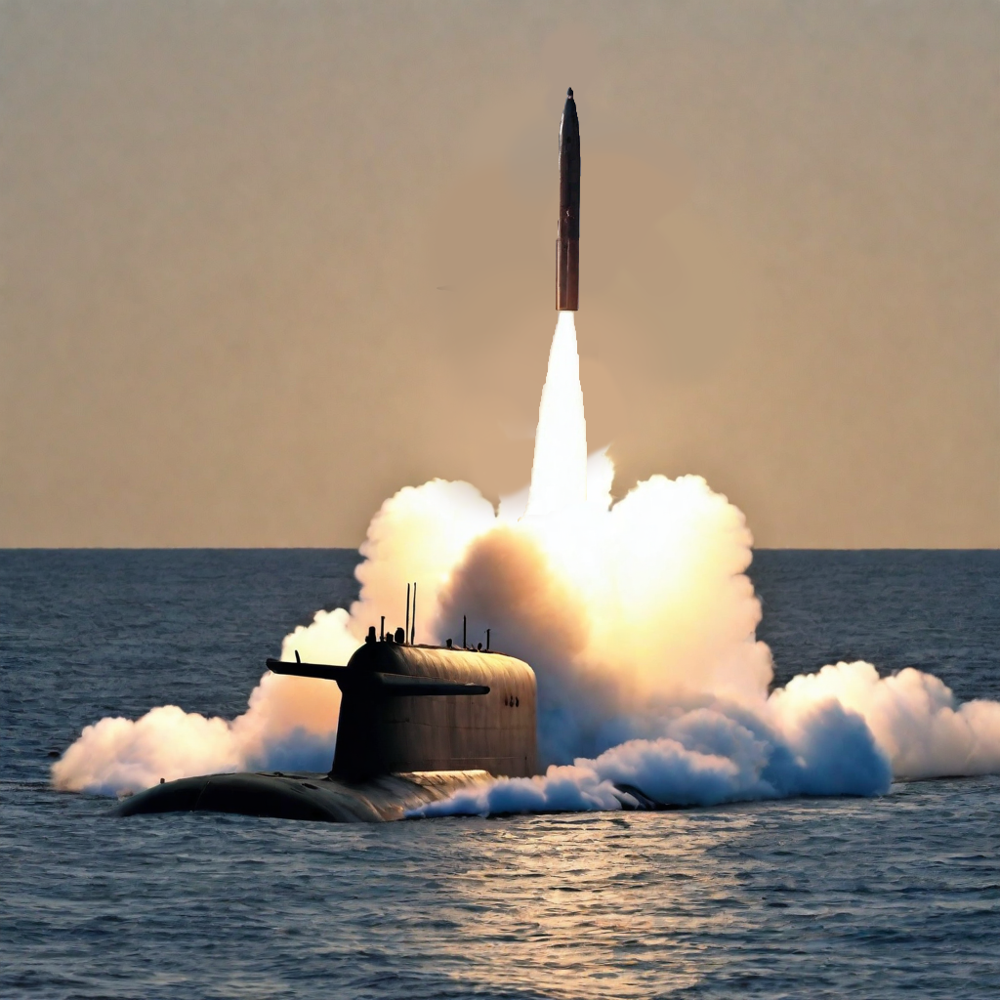

The Aerodynamics of Missiles

Fundamentals
All missiles, for any purpose, including air defence, anti-ship warfare or ground attack, heavily rely on aerodynamics to achieve their intended results due to the crucial role it has on its speed, precision and manoeuvrability. Aerodynamics is the study of the behaviour of air, especially when it interacts with a solid moving object. Many factors affect projectiles all of which need to be either minimised or used to its advantage.
Four integral forces of flight are required to understand aerodynamics: lift, drag, weight and thrust [2].
Lift is used to overcome the aircraft’s weight to keep it airborne and acts perpendicular to its relative motion. This is primarily generated by the shape of the wings, with a pressure difference created between the upper and lower surfaces of the wings. This results in the upward force experienced.
Weight is the force experienced due to the gravitational pull towards the Earth’s centre. This force depends on the mass of the missile being launched.
Thrust is produced by the aircraft’s engine, counteracting other forces and propelling the missile forward. The generation of thrust involves the expulsion of air at a high velocity, in accordance with Newton’s third law.
Drag is the resistance force opposing motion due to friction between the missile and air molecules. Minimising drag is an important aspect to any aircraft design, as it improves fuel efficiency, enhancing performance. This is crucial to the aircraft’s speed and efficiency.
These four forces are shown in the diagram below:

Another important factor to consider is the average location of the aerodynamic forces on an object which is called the centre of pressure. This is where lift and drag act through, with this point being where the total sum of all aerodynamic forces can be concentrated for analysis. The relation between centre of pressure and centre of mass dictates the missile’s stability, with the centre of pressure ideally being located downstream of the centre of mass. The centre of pressure also changes with factors such as orientation, velocity and the configuration of the fins.
Forms of Drag Experienced
A detailed illustration of the various forms of drag is shown below, with each label being described:

This is the drag force between the surface of the rocket and the surrounding molecules of air. This is greatly affected by the viscosity of the fluid the missile is passing through, this causes a shear stress upon the surface, which is a force parallel to the missile’s surface. Skin friction is a major contributor to the overall drag experienced, especially at lower speeds.
This is closely related to lift, and causes an induced drag. Engineers seek to optimise the angle of attack in such a way as to balance lift and drag.
This is caused due to the pressure differences created by the missile’s movement and shape. Therefore, designs are made to ensure the shape causes the least drag possible.
This is the thin layer of fluid adjacent to the missile’s surface where the particles move in a smooth pattern along parallel paths which are predictable. The Reynold’s number essentially describes how ordered or chaotic the flow is, with smaller values meaning the flow is more laminar.
This occurs after the transition point where the Reynold’s number exceeds a certain value. Turbulent flow is a chaotic motion of particles, with rapid changes to particle velocity. This results in higher energy dissipation compared to laminar flow. It also causes a higher skin friction increasing drag.
This drag is due to the presence of the fins which causes the flow around the main body of the missile to create pressure imbalances, which has a significant contribution to drag. However, this is outweighed by the gain in stability and control that the fins give a projectile. Efforts are made to mitigate this issue, designing the fins to have the least impact on drag, but still provide the required element of control.
Also known as an afterbody drag, this is associated with the separation of the flow behind the missile. This causes a high pressure zone in the wake (downstream of an object extending from the rear) resulting in forces opposing motion. This is particularly relevant in high velocity projectiles such as missiles. Efficiently engineering the design of a missile to manage this force is needed to achieve better fuel efficiency and performance.
Applications to Missiles
The aerodynamics of missiles play a vital role in shaping their performance across various applications. Understanding the fundamental principles of aerodynamics is essential to optimize speed, precision and maneuverability. The desired outcome is achieved by numerous properties and designs used, with some being:
- A more streamlined shape minimises drag, allowing the missile to cut through the air with the least resistance possible. This is usually a conical or parabolic shape, reducing frontal pressure and ensuring a smooth flow around the missile.
- Fins contribute to the stability of a missile during flight and are used for stability and to ensure it follows its intended trajectory.
- The fins shape must change to accommodate changes in speed and the altitude the missile operates at. This is especially useful in hypersonic missiles, which travel at particularly fast speeds, where drag forces are greater.
- Real-time adjustments to the missile’s orientation can be made with grid fins, which can be extended or retracted depending on what is required. This is called an active control system.
- Protection such as fairing or shrouds, that protect the payload of the missile, are designed to be as aerodynamic as possible.
- At speeds exceeding Mach 5, aerodynamic heating occurs. This becomes a critical issue, requiring special materials to withstand the intense temperatures generated.
- It also causes the change from laminar to turbulent flow causing other issues.
- These issues are also present upon re-entry to Earth’s atmosphere with excessive temperatures encountered.
Aerodynamic Equations for Forces
Many equations are used to understand the aerodynamics of a missile, with each providing important information required for calculations and designs. The main equations relate to the forces experienced by the missile [6].
Where ρ is the density of air, v the missile’s velocity, and S is the reference area. Cx is the lift, drag or side force coefficients, these being dimensionless values. These coefficients are greatly influenced by by factors such as the density of air and missile velocity. Understanding and manipulating these coefficients allow engineers to optimise missile designs to meet specific performance criteria.
Conclusion
In conclusion, the aerodynamics of missiles plays a vital role in determining it's speed, precision and manoeuvrability and understanding this is crucial to maximise efficiency. Factors like skin friction, fin-body interference and base drag play key roles, with fins being designed to provide stability whilst minimising drag. Many challenges are faced when dealing with aerodynamics, with equations being used to describe scenarios.
Quiz
Test your knowledge with this article's quiz.
References
[1] Poe AI, edited by J. Stephens. Prompts used were: 'submarine' and 'ballistic missile'
[2] NASA. "Four Forces of Flight" (Accessed: 30 January 2024)
[3] NASA. (2023) "Four forces on a Rocket" (Accessed: 26 January 2024)
[4] Image by D. Davidson
[5] Smith, C.R. (2021) "Aerodynamic heating in hypersonic flows" doi: https://doi.org/10.1063/pt.3.4888, Physics Today, 74(11), pp.66–67. (Accessed: 30 January 2024)
[6] Nasa.gov. (2014). "Lift Formula" (Accessed 30 January 2024)